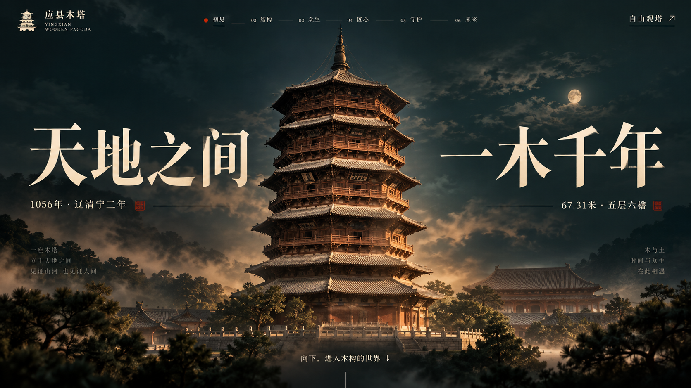

返回三维网站 ↗同一座塔，比较镜头与质感。
首页改为更近、更低的 64° 广角仰视，扩大塔基与塔顶的透视差；前景树枝从左右两侧遮入，中央留出仰望视线；斗栱保留上一轮接缝阴影与近景虚实。右侧可以切换上轮网页、这轮实时画面及实际预渲染样片。

已确认的设计参考 这轮实时画面 · 网页截图
这轮实时画面 · 网页截图实时画面保持可旋转、可拆层。预渲染选项为无文字的实际渲染，用于比较木纹、灯光、景深与镜头。
固定滚动路径的建议
主叙事采用提前渲染的连续画面，由滚动位置控制播放；自由观塔继续使用实时模型。这样可以把更细的材质、间接光和景深用于叙事，同时保留交互。
当前完成的是首页和斗栱两张定帧样片，整条滚动序列尚未生成、未替换网站的实时叙事。样片为 1008×568；网页截图为 1672×940。设计稿中的部分构件形状、装饰与实际模型仍有差异。